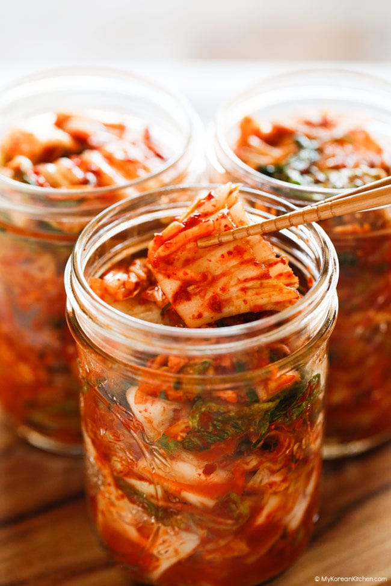

Kimchi

Description
Raw, fermented kimchi to get kick your gut bacteria into grade A shape, baby!
Ingredients
- 2 pounds (907 grams) napa cabbage, trimmed, cut lengthwise into 4 to 8 sections, cored, and then cut crosswise into 2- to 3-inch rectangular pieces (about 15 cups)
- 2 tablespoons plus 2 teaspoons (24 grams) kosher salt
- 12 ounces (340 grams) daikon radish, peeled and cut into matchsticks measuring about 1/4 by 1/4 by 2 1/2 inches (about 2 cups)
- 1 teaspoon granulated sugar
- 1/4 cup (25 grams) gochugaru (Korean red pepper flakes)
- 2 tablespoons (30 ml) water
- 2 teaspoons dark brown sugar
- 1/2 cup diced Asian pear (65 grams)
- 1/4 cup diced yellow onion (35 grams)
- 2 1/4 ounces (64 grams) fresh ginger, peeled and cut into matchsticks
- 4 large garlic cloves (25 grams), peeled and cut into narrow slices
- 1 teaspoon fish sauce
- 6 to 8 scallions (145 grams), halved lengthwise and cut crosswise into 2-inch pieces